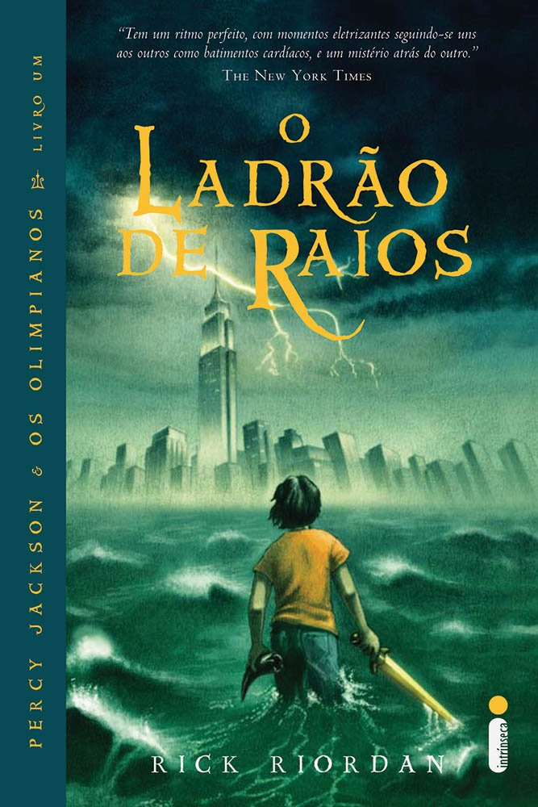

Estante de Livros
Sua biblioteca à um clique de distância
Harry Potter e a Pedra Filosofal

Sinopse
Harry Potter nunca tinha ouvido falar em Hogwarts até o momento em que as cartas começam a aparecer no capacho do número quatro da rua dos Alfeneiros. Endereçadas com um lacre púrpura, elas são repidamente confiscadas por seus tios terríveis. E então, no décimo primeiro aniversário de Harry, um homem gigantesco com olhos luzindo como besouros negros chamado Rúbeo Hagrid entra intempestivamente com uma notícia assombrosa: Harry Potter é um bruxo e tem uma vaga na escola de magia e bruxaria de Hogwarts. Uma aventura inacreditável está para começar!
| Data da primeira publicação |
Autor |
Idima Original |
Gêneros |
| 26 de Junho de 1997 |
J. K. Rowling |
Inglês |
Romance, Literatura Infantil, Literatura Fantástica, Alta Fantasia |
Fonte: Google Books
O senhor dos anéis: A sociedade do anel

Sinopse
A Sociedade do Anel O volume inicial de O Senhor dos Anéis, lançado originalmente em julho de 1954, foi o primeiro grande épico de fantasia moderno, conquistando milhões de leitores e se tornando o padrão de referência para todas as outras obras do gênero até hoje. A imaginação prodigiosa de J.R.R. Tolkien e seu conhecimento profundo das antigas mitologias da Europa permitiram que ele criasse um universo tão complexo e convincente quanto o mundo real. A Sociedade do Anel começa no Condado, a região rural do oeste da Terra-média onde vivem os diminutos e pacatos hobbits. Bilbo Bolseiro, um dos raros aventureiros desse povo, cujas peripécias foram contadas em O Hobbit, resolve ir embora do Condado e deixa sua considerável herança nas mãos de seu jovem parente Frodo.
| Data da primeira publicação |
Autor |
Idima Original |
Gêneros |
| 28 de Julho de 1954 |
J. R. R. Tolkien |
Inglês |
Literatura Fantástica |
Fonte: Google Books
Percy Jackson e o Ladrão de Raios

Sinopse
Primeiro volume da saga Percy Jackson e os olimpianos, O ladrão de raios esteve entre os primeiros lugares na lista das séries mais vendidas do The New York Times. O autor conjuga lendas da mitologia grega com aventuras no século XXI. Nelas, os deuses do Olimpo continuam vivos, ainda se apaixonam por mortais e geram filhos metade deuses, metade humanos, como os heróis da Grécia antiga. Marcados pelo destino, eles dificilmente passam da adolescência. Poucos conseguem descobrir sua identidade. O garoto-problema Percy Jackson é um deles. Tem experiências estranhas em que deuses e monstros mitológicos parecem saltar das páginas dos livros direto para a sua vida. Pior que isso: algumas dessas criaturas estão bastante irritadas.
| Data da primeira publicação |
Autor |
Idima Original |
Gêneros |
| 28 de Junho de 2005 |
Rick Riordan |
Inglês |
Mitologia Grega, Romance, Ficção Juvenil |
Fonte: Google Books
Alice no País das Maravilhas

Sinopse
Uma menina, um coelho e uma história capazes de fazer qualquer um de nós voltar a sonhar. Alice é despertada de um leve sono ao pé de uma árvore por um coelho peculiar. Uma criatura alva e falante com roupas engraçadas, que consulta seu relógio e reclama do próprio atraso. Curiosa como toda criança, Alice segue o animal até cair em um buraco sem fim que mudou para sempre a literatura infantil
| Data da primeira publicação |
Autor |
Idima Original |
Gêneros |
| Novembro de 1865 |
Lewis Carroll |
Inglês |
Literatura Infantil |
Fonte: Google Books
O Guia do Mochileiro das Galáxias
Sinopse
Considerado um dos maiores clássicos da literatura de ficção científica, O Guia do Mochileiro das Galáxias vem encantando gerações de leitores ao redor do mundo com seu humor afiado. Este é o primeiro título da famosa série escrita por Douglas Adams, que conta as aventuras espaciais do inglês Arthur Dent e de seu amigo Ford Prefect. A dupla escapa da destruição da Terra pegando carona numa nave alienígena, graças aos conhecimentos de Prefect, um E.T. que vivia disfarçado de ator desempregado enquanto fazia pesquisa de campo para a nova edição do Guia do Mochileiro das Galáxias, o melhor guia de viagens interplanetário. Mestre da sátira, Douglas Adams cria personagens inesquecíveis e situações mirabolantes para debochar da burocracia, dos políticos, da "alta cultura" e de diversas instituições atuais. Seu livro, que trata em última instância da busca do sentido da vida, não só diverte como também faz pensar.
| Data da primeira publicação |
Autor |
Idima Original |
Gêneros |
| 12 de Outubro de 1979 |
Douglas Adams |
Inglês |
Ficção Científica |
Fonte: Google Books
Voltar ao topo da página